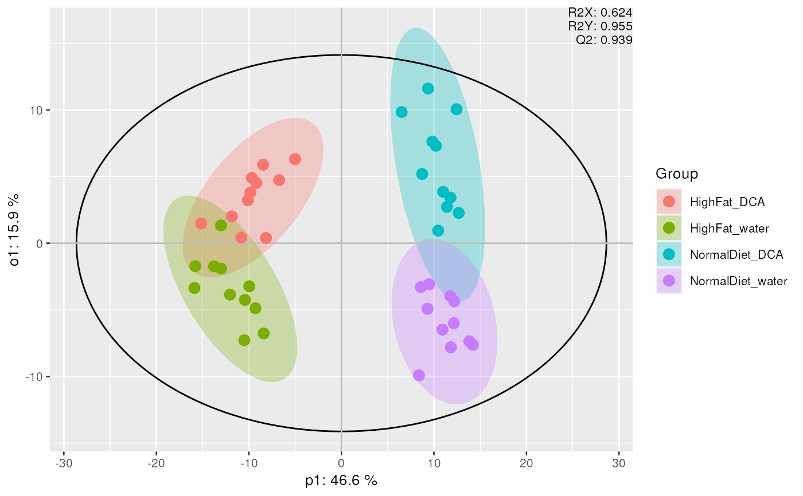
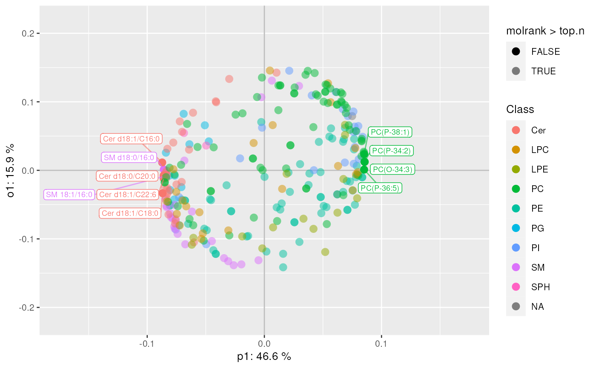

mva performs multivariate analysis using several possible methods.
The available methods are PCA, PCoA, OPLS and OPLS-DA. The OPLS method
requires a numeric y-variable, whilst OPLS-DA requires two groups for
comparison. By default, for OPLS and OPLS-DA the number of predictive and
orthogonal components are set to 1.
Blank samples are automatically detected (using TIC) and excluded.
Missing data are imputed using average lipid intensity across all samples.
mva(
data,
measure = "Area",
method = c("PCA", "PCoA", "OPLS", "OPLS-DA"),
group_col = NULL,
groups = NULL,
...
)
plot_mva(
mvaresults,
components = c(1, 2),
color_by = NULL,
ellipse = TRUE,
hotelling = TRUE
)
plot_mva_loadings(
mvaresults,
components = c(1, 2),
color_by = NULL,
top.n = nrow(mvaresults$loadings)
)
top_lipids(mvaresults, top.n = 10)LipidomicsExperiment object.
Which measure to use as intensity, usually Area (default). The measure should be already summarized and normalized.
Either PCA, PCoA, OPLS or OPLS-DA. Default is PCA.
Sample annotation to use as grouping column. If not provided, samples are treated independently.
A numeric grouping (OPLS) or two groups to be used for supervised analysis (OPLS-DA), ignored in other methods.
Extra arguments to be passed to opls() for OPLS-DA,
ignored in other methods.
Results obtained from mva().
Which components to plot. Ignored for PCoA, OPLS and OPLS-DA results. Default is first 2 components.
Sample annotation (or lipid annotation in case of
plot_mva_loadings) to use as color. Defaults to individual samples /
lipids
Whether to plot ellipses around groups
Whether to plot Hotelling T2.
Number of top ranked features to highlight in the plot. If omitted, returns top 10 lipids.
Multivariate analysis results in mvaresults object.
The object contains the following:
scores Sample scores
loadings Feature or component loadings (not for PCoA)
method Multivariate method that was used
row_data Lipid molecule annotations
col_data Sample annotations
original_object Original output object as returned by corresponding analysis methods
plot_mva returns a ggplot of the sample scores.
plot_mva_loadings returns a ggplot of the loadings.
top_lipids returns s dataframe of top.n lipids with
their annotations.
plot_mva(): plots a multivariate scatterplot of sample scores to investigate
sample clustering.
plot_mva_loadings(): Plot a multivariate scatterplot of feature loadings
to investigate feature importance.
top_lipids(): extracts top lipids from OPLS-DA results
data(data_normalized)
# PCA
mvaresults <- mva(data_normalized, measure = "Area", method = "PCA")
plot_mva(mvaresults, color_by = "group")
#> Warning: The following aesthetics were dropped during statistical transformation: label
#> ℹ This can happen when ggplot fails to infer the correct grouping structure in
#> the data.
#> ℹ Did you forget to specify a `group` aesthetic or to convert a numerical
#> variable into a factor?
# NOT RUN
# plot_mva(mvaresults, color_by = "Diet", components = c(2, 3))
# PCoA
mvaresults <- mva(data_normalized, measure = "Area", method = "PCoA")
# NOT RUN
# plot_mva(mvaresults, color_by = "group")
# OPLS-DA
mvaresults <- mva(
data_normalized,
method = "OPLS-DA", group_col = "Diet", groups = c("HighFat", "Normal")
)
plot_mva(mvaresults, color_by = "group")
#> Warning: The following aesthetics were dropped during statistical transformation: label
#> ℹ This can happen when ggplot fails to infer the correct grouping structure in
#> the data.
#> ℹ Did you forget to specify a `group` aesthetic or to convert a numerical
#> variable into a factor?

plot_mva_loadings(mvaresults, color_by = "Class", top.n = 10)

top_lipids(mvaresults, top.n = 10)
#> filename Molecule Precursor.Mz Precursor.Charge clean_name
#> 1 F1_data.csv Cer d18:1/C16:0 538.7 1 Cer 18:1/16:0
#> 2 F1_data.csv Cer d18:1/C18:0 566.7 1 Cer 18:1/18:0
#> 3 F1_data.csv SM 18:1/16:0 703.5 1 SM 18:1/16:0
#> 4 F1_data.csv Cer d18:0/C20:0 596.7 1 Cer 18:0/20:0
#> 5 F1_data.csv Cer d18:1/C22:6 610.7 1 Cer 18:1/22:6
#> 6 F1_data.csv SM d18:0/16:0 705.6 1 SM 18:0/16:0
#> 7 F2_data.csv PC(O-34:3) 742.5 1 PCO-34:3
#> 8 F2_data.csv PC(P-34:2) 742.5 1 PCP-34:2
#> 9 F2_data.csv PC(P-38:1) 800.6 1 PCP-38:1
#> 10 F2_data.csv PC(P-36:5) 764.6 1 PCP-36:5
#> ambig not_matched istd class_stub chain1 l_1 s_1 chain2 l_2 s_2 chain3 l_3
#> 1 FALSE FALSE FALSE Cer 18:1 18 1 16:0 16 0 NA
#> 2 FALSE FALSE FALSE Cer 18:1 18 1 18:0 18 0 NA
#> 3 FALSE FALSE FALSE SM 18:1 18 1 16:0 16 0 NA
#> 4 FALSE FALSE FALSE Cer 18:0 18 0 20:0 20 0 NA
#> 5 FALSE FALSE FALSE Cer 18:1 18 1 22:6 22 6 NA
#> 6 FALSE FALSE FALSE SM 18:0 18 0 16:0 16 0 NA
#> 7 FALSE FALSE FALSE PCO 34:3 34 3 NA NA NA
#> 8 FALSE FALSE FALSE PCP 34:2 34 2 NA NA NA
#> 9 FALSE FALSE FALSE PCP 38:1 38 1 NA NA NA
#> 10 FALSE FALSE FALSE PCP 36:5 36 5 NA NA NA
#> s_3 chain4 l_4 s_4 total_cl total_cs Class molrank
#> 1 NA NA NA 34 1 Cer 1
#> 2 NA NA NA 36 1 Cer 2
#> 3 NA NA NA 34 1 SM 3
#> 4 NA NA NA 38 0 Cer 4
#> 5 NA NA NA 40 7 Cer 5
#> 6 NA NA NA 34 0 SM 6
#> 7 NA NA NA 34 3 PC 7
#> 8 NA NA NA 34 2 PC 8
#> 9 NA NA NA 38 1 PC 9
#> 10 NA NA NA 36 5 PC 10